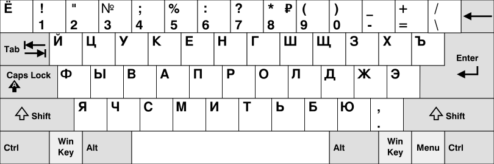

The Russian alphabet (ру́сский алфави́т, russkiy alfavit,[a] or ру́сская а́збука, russkaya azbuka,[b] more traditionally) is the script used to write the Russian language. It comes from the Cyrillic script, which was devised in the 9th century for the first Slavic literary language, Old Slavonic. Initially an old variant of the Bulgarian alphabet,[2] it became used in the Kievan Rus' since the 10th century to write what would become the Russian language.
The modern Russian alphabet consists of 33 letters: twenty consonants (⟨б⟩, ⟨в⟩, ⟨г⟩, ⟨д⟩, ⟨ж⟩, ⟨з⟩, ⟨к⟩, ⟨л⟩, ⟨м⟩, ⟨н⟩, ⟨п⟩, ⟨р⟩, ⟨с⟩, ⟨т⟩, ⟨ф⟩, ⟨х⟩, ⟨ц⟩, ⟨ч⟩, ⟨ш⟩, ⟨щ⟩), ten vowels (⟨а⟩, ⟨е⟩, ⟨ё⟩, ⟨и⟩, ⟨о⟩, ⟨у⟩, ⟨ы⟩, ⟨э⟩, ⟨ю⟩, ⟨я⟩), a semivowel / consonant (⟨й⟩), and two modifier letters or "signs" (⟨ь⟩, ⟨ъ⟩) that alter pronunciation of a preceding consonant or a following vowel.
The hard sign (⟨ъ⟩) acts like a "silent back vowel" that separates a succeeding "soft vowel" (⟨е, ё, ю, я⟩, but not ⟨и⟩) from a preceding consonant, invoking implicit iotation of the vowel with a distinct /j/ glide. Today it is used mostly to separate a prefix ending with a hard consonant from the following root. Its original pronunciation, lost by 1400 at the latest, was that of a very short middle schwa-like sound, likely pronounced [ə] or [ɯ]. Until the 1918 reform, no written word could end in a consonant: those that end in a "hard" consonant in modern orthography then had a final ⟨ъ⟩.
While ⟨и⟩ is also a soft vowel, root-initial /i/ following a hard consonant is typically pronounced as [ɨ]. This is normally spelled ⟨ы⟩ (the hard counterpart to ⟨и⟩) unless this vowel occurs at the beginning of a word, in which case it remains ⟨и⟩. An alternation between the two letters (but not the sounds) can be seen with the pair без и́мени ('without name', which is pronounced [bʲɪz ˈɨmʲɪnʲɪ]) and безымя́нный ('nameless', which is pronounced [bʲɪzɨˈmʲænːɨj]). This spelling convention, however, is not applied with certain loaned prefixes such as in the word панислами́зм – [ˌpanɨsɫɐˈmʲizm], 'Pan-Islamism') and compound (multi-root) words (e.g. госизме́на – [ˌɡosɨˈzmʲenə], 'high treason').
The soft sign in most positions acts like a "silent front vowel" and indicates that the preceding consonant is palatalized (except for always-hard ж, ш, ц) and the following vowel (if present) is iotated (including ⟨ьо⟩ in loans). This is important as palatalization is phonemic in Russian. For example, брат [brat] ('brother') contrasts with брать [bratʲ] ('to take'). The original pronunciation of the soft sign, lost by 1400 at the latest, was that of a very short fronted reduced vowel /ĭ/ but likely pronounced [ɪ] or [jɪ]. There are still some remnants of this ancient reading in modern Russian, e.g. in co-existing versions of the same name, read and written differently, such as Марья and Мария ('Mary').
When applied after stem-final always-soft (ч, щ, but not й) or always-hard (ж, ш, but not ц) consonants, the soft sign does not alter pronunciation, but has grammatical significance:
The standard Russian keyboard layout for personal computers is as follows:
However, there are several variations of so-called "phonetic keyboards" that are often used by non-Russians, where, as far as is possible, pressing an English letter key will type the Russian letter with a similar sound (A → А, S → С, D → Д, F → Ф, etc.).